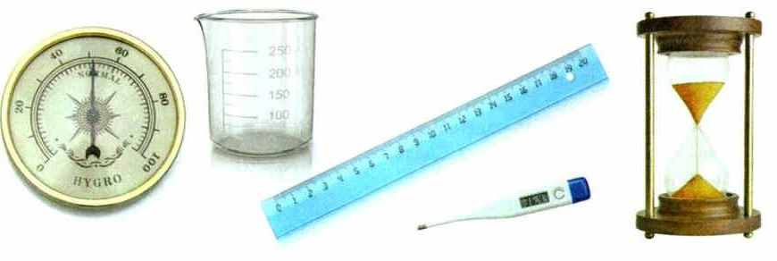
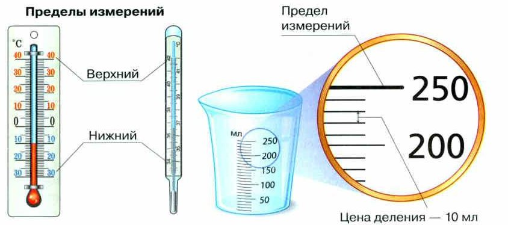
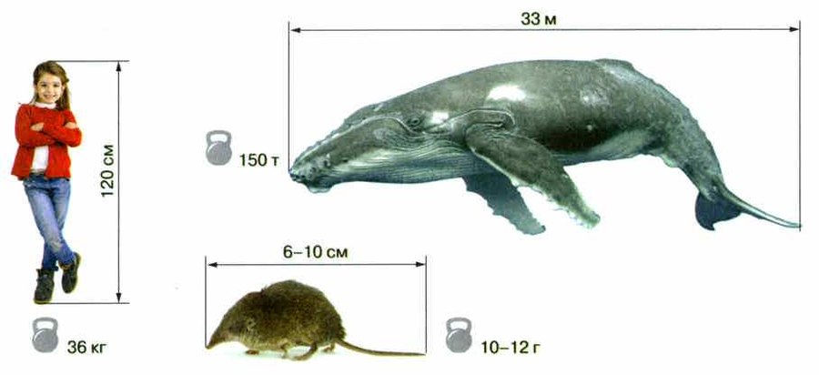
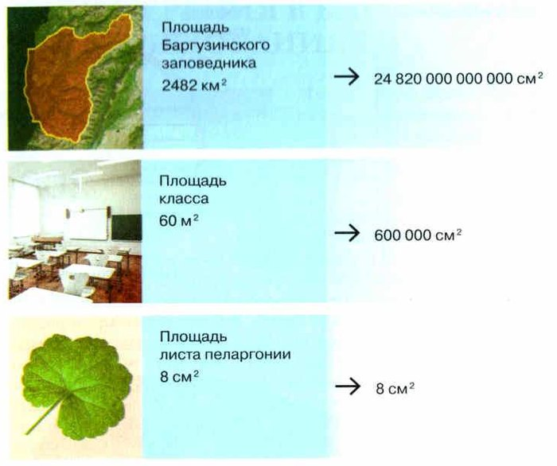

Метод измерения
Учёные замечают не только качественные изменения — например, у семени появился корешок, росток, листья. Они ещё и считают: какой длины корешок, какой ширины листья. Это количественные изменения — для них нужно точное измерение.
Измерение — это когда узнают число: какого размера, сколько весит, сколько времени прошло. Ты сама много раз измеряла длину, ширину, высоту, массу, объём, время, температуру, расстояние.
Для этого есть измерительные приборы (рис. 21):
• время — часы или секундомер;
• длина, ширина, высота, расстояние — линейка или рулетка;
• температура — термометр;
• масса — весы (вспомни весы в магазине);
• объём жидкости — мензурка.
Главное в измерении — точность. Учёные пользуются очень точными приборами. Но прежде чем мерить, проверяют у прибора две вещи: предел измерения и цену деления. И решают, подходит ли он.
При проведении научных исследований определяют не только качественные изменения (например, появление корешка, ростка, листьев при прорастании семени), но и количественные, основанные на точном измерении (длина корешков, ширина листьев и т. д.).
Измерение — определение числового значения определённой величины объекта или явления. Точные измерения необходимы как для проведения научных исследований, так и в повседневной жизни. Каждый из вас неоднократно измерял размеры тел (их длину, ширину, высоту), массу, объём, время, температуру, расстояние и т. д. Для проведения измерений вы использовали измерительные приборы: линейки, рулетки, часы, весы, термометры, мензурки и т. д. (рис. 21). Например, чтобы измерить время, используют часы или секундомер. Длину, высоту, ширину предметов, а также расстояния между ними измеряют при помощи линейки или рулетки. Термометр используют для измерения температуры. Весы служат для измерения массы — вспомните, как продавец, отпуская вам товар, кладёт его на весы. Объёмы жидкости отмеряют мензуркой.
Важнейшим показателем качества измерения и его научной ценности является точность. В настоящее время при проведении биологических исследований учёные используют современные высокоточные приборы измерения. Прежде чем воспользоваться, тем или иным измерительным прибором, определяют его предел измерения и цену деления и решают, подходит ли он для поставленных целей.

1. Чем качественные изменения отличаются от количественных? Приведи пример из учебника.
2. Что учёный проверяет у прибора перед измерением и зачем?
Предел измерения и цена деления
Предел измерения — самое большое число, которое можно измерить прибором. Его видно у последнего штриха шкалы.
Цена деления — сколько «стоит» один шажок между двумя соседними штрихами.
Как найти цену деления: возьми два соседних подписанных числа, вычти меньшее из большего и подели на количество шажков между ними. На мерном стакане (рис. 22): (250 − 200) : 5 = 10 мл.
Чем меньше цена деления, тем точнее прибор. Если у рулетки цена деления 5 мм, то с точностью до 1 мм ею не измерить. У уличного термометра шажок — 1 градус, а у медицинского градусника — одна десятая градуса. Значит, медицинский градусник точнее в 10 раз (рис. 22).
Когда сравнивают измерения, можно найти закономерности.
Предел измерения — это наибольшая величина, которая может быть измерена с помощью данного измерительного прибора. Предел измерения определяют по значению, равному последнему штриху на шкале прибора. Цена деления — величина, соответствующая расстоянию между двумя соседними штрихами шкалы измерительного прибора. Чем меньше цена деления, тем выше точность измерительного прибора. Это значит, что если рулетка имеет цену деления 5 мм, то ею не удастся измерить длину с точностью до 1 мм. Цена деления уличного термометра равна одному градусу, а медицинского градусника — десятой доли градуса, т. е. его точность измерения выше в десять раз (рис. 22). Анализ и сравнение измерений, полученных при проведении научных исследований, позволяют выявить определённые закономерности.

самое большое число на шкале: у этого стакана — 250 мл
один шажок между штрихами: у этого стакана — 10 мл
Предел — сколько влезет. Цена деления — какой шажок.
3. У какого термометра точность выше — у уличного или у медицинского? Во сколько раз?
4. Рулеткой с ценой деления 5 мм нужно измерить длину листа с точностью до 1 мм. Получится? Почему?
Выбор единиц измерения
Важно правильно выбрать единицы измерения.
Массу человека обычно пишут в килограммах, синего кита — в тоннах, а землеройки — в граммах (рис. 23).
Сравним по рис. 23: кит весит 150 тонн — это 150 000 кг. А девочка — 36 кг. Получается, кит тяжелее примерно в 4 тысячи раз!
Любую величину можно записать в разных единицах. Площадь Баргузинского заповедника — 2482 км², школьного кабинета — 60 м², листа пеларгонии — около 8 см². Понятно, что заповедник больше кабинета, а кабинет больше листа. Но насколько — сказать трудно.
Если перевести всё в одни единицы, сравнивать легко (рис. 24): заповедник — 24 820 000 000 000 см², кабинет — 600 000 см², лист — 8 см².
Для измерения той или иной величины важно правильно выбрать единицы измерения.
Массу человека, как правило, указывают в килограммах, синего кита — в тоннах, а землеройки — в граммах (рис. 23).
Любую величину можно выразить в разных единицах измерения. Так, площадь Баргузинского заповедника составляет 2482 км², площадь школьного кабинета — 60 м², а листа пеларгонии — около 8 см². При взгляде на эти величины сразу становится понятно, что заповедник по площади больше кабинета, а кабинет — больше листа пеларгонии, но величину этих различий указать сложно. Если же выразить все величины в одних и тех же единицах измерения, то будет легче их сравнить (рис. 24).


5. Почему массу землеройки пишут в граммах, а кита — в тоннах?
6. Зачем на рис. 24 все площади перевели в квадратные сантиметры?
Итоги и «Моя лаборатория»
Измерения · Измерительные приборы · Предел измерения · Цена деления
- Какое значение имеют измерения в научных исследованиях?
- Какие единицы измерения вы знаете?
- От чего зависит выбор единиц измерения в исследованиях и повседневной жизни?
- Как определить предел измерения и цену деления шкалы измерительного прибора?
- Приведите примеры измерительных приборов для выполнения измерения различных параметров биологических объектов.
Раньше в разных странах использовались свои национальные единицы измерений. В настоящее время практически все страны перешли на единую международную систему измерений и широко используют её. Почему это произошло?
- Поставьте цель проведения измерения.
- Определите количественные признаки (параметры) объекта для проведения измерения и инструменты, необходимые для этих целей.
- Выберите единицы измерения.
- Определите предел измерения и цену деления доступных измерительных приборов и выберите из них наиболее подходящие.
- Проведите измерение с использованием соответствующих приборов. Для получения объективных результатов измерение каждого параметра следует провести три раза.
- Вычислите среднее значение измеренных величин.
- Пользуясь вышеприведённой памяткой, измерьте ширину листьев нескольких растений в кабинете биологии. Зарисуйте их, указав размеры. Занесите данные в таблицу: вид растения — орган — параметр измерения — результаты измерений 1, 2, 3 — среднее значение. Рассчитайте среднее значение измеренных величин (задание повышенной трудности).
- Измерьте длину и ширину учебника биологии. Вычислите его площадь.
- Выразите в одних и тех же единицах измерения высоту куста шиповника (200 см), сосны (54 м) и люпина (1000 мм). Результаты занесите в таблицу.
Сначала попробуй сама со шпаргалкой из раздела 3.
- Шиповник 200 см → в метры: 200 : 100 = 2 м; в миллиметры: 200 × 10 = 2000 мм.
- Сосна 54 м → в сантиметры: 54 × 100 = 5400 см; в миллиметры: 5400 × 10 = 54 000 мм.
- Люпин 1000 мм → в сантиметры: 1000 : 10 = 100 см; в метры: 100 : 100 = 1 м.
- Теперь сравнить легко: сосна выше шиповника в 27 раз (54 : 2), а люпина — в 54 раза.
Сейчас почти везде пользуются Международной системой единиц (СИ). Но так было не всегда.
Раньше в каждой стране были свои меры длины: аршин, сажень, фут, дюйм, ярд, миля и другие. Переводить одни в другие было трудно. А в разных местах одинаковые названия иногда значили разное.
Поэтому ещё в конце XVIII века решили сделать одну удобную метрическую систему. В 1799 году во Франции изготовили два образца — метр и килограмм. В 1960 году приняли Международную систему единиц: её главные единицы — метр, килограмм, секунда и другие. В нашей стране её ввели с 1 января 1963 года.
Но и сейчас учёные иногда берут другие единицы. Астрономы меряют расстояния не километрами, а световыми годами. А для очень маленьких объектов удобны микрон и нанометр.
Познакомившись с данным текстом, подумайте какой вывод можно сделать. Обоснуйте его. Обсудите этот вопрос с одноклассниками.
В настоящее время повсеместно признанной является Международная система единиц (СИ). Но так было не всегда. Ещё совсем недавно каждое государство использовало свою систему единиц измерения.
Например, для измерения длины применялись такие единицы измерения, как аршин, сажень, фут, дюйм, ярд, миля и другие. Такое многообразие связано с национальными системами измерения различных государств, которые складывались столетиями.
Так как единицы измерения выбирались независимо друг от друга, пересчёт из одной единицы в другую был сложным. К тому же в разных местах применялись разные единицы, иногда с одинаковыми названиями. Поэтому ещё в конце XVIII века стали понимать, что необходимо разработать метрическую систему, которая была бы удобной и единой системой мер и весов.
В 1799 году во Франции были изготовлены два эталона — для единицы длины (метр) и для единицы массы (килограмм). Но процесс разработки единой метрической системы был длительным.
Только в 1960 году XI Генеральная конференция по мерам и весам приняла стандарт, который впервые получил название «Международная система единиц», и установила международное сокращённое наименование этой системы «SI». Основными единицами в ней стали метр, килограмм, секунда, ампер, градус Кельвина и кандела.
С 1 января 1963 года Международная система единиц (СИ) была введена в нашей стране в качестве предпочтительной во всех областях науки, техники и народного хозяйства, а также при преподавании.
Но следует отметить, что и в настоящее время учёные при проведении некоторых исследований продолжают использовать единицы измерения, не входящие в систему СИ. Например, в астрономии для измерения расстояния между объектами природы используют не километр, а такие единицы, как световой год, парсек, астрономическая единица. А при изучении микромира наиболее удобно применять такие малые единицы измерения, как микрон, нанометр.
- Тематические каталоги собирают вручную редакторы: информация разложена по разделам, как в библиотеке. Пример — Единая коллекция цифровых образовательных ресурсов.
- Поисковые системы сами находят ссылки на сайты по ключевым словам или фразам. Можно искать голосом и по картинке.
- Подбирай ключевые слова от общего к частному. Упражнение: 10 ключевых слов для темы любого урока биологии.
- У выступления три части: вступление (о чём и зачем), главная часть, заключение (выводы).
- Не читай с листа — пересказывай.
- Поздоровайся, назови тему и цель. Говори громко и чётко, без «ну», «типа», «как бы».
- Не торопись: обычный темп — 120—150 слов в минуту, с паузами. Короткие предложения.
- Начни с интересного вопроса, например: «А вы задумывались, как появилась жизнь на нашей планете?»
- Узнай заранее у учителя, сколько времени на выступление, и уложись.
Проверь себя
Ошиблась — не страшно, попробуй другую кнопку.
Ширину листа
Длину и ширину меряют линейкой или рулеткой.
Сколько весит Люся
Масса — весами.
Температуру тела
Температура — термометром.
Сколько кефира налить в тесто
Объём жидкости — мензуркой (мерным стаканом).
Сколько секунд Юкси сидит в домике
Время — часами или секундомером.
Твой рост для новой наклейки на стене
Высоту меряют рулеткой.
Масса землеройки
Как в учебнике: 10—12 г.
Масса синего кита
Как в учебнике: 150 т.
Масса девочки на рис. 23
Как в учебнике: 36 кг.
Масса муки для блинов
Муку отвешивают в граммах.
Масса Юкси
Дегу маленькие — их удобно взвешивать в граммах.
Масса корги
Собаку удобно взвешивать в килограммах.
1. Что такое измерение?
2. Что такое предел измерения?
3. Между 200 и 250 мл на мензурке 5 шажков. Какая цена деления?
4. Какой термометр точнее?
5. Зачем каждое измерение повторяют три раза?
6. Сколько сантиметров в 54 метрах?
Расскажи вслух
Что такое измерение и какие бывают приборы
- Измерение — определение числового значения величины объекта или явления.
- Приборы: линейка и рулетка — длина, весы — масса, термометр — температура, мензурка — объём, часы — время.
- Главное — точность; перед измерением определяют предел и цену деления.
Предел измерения и цена деления
- Предел — наибольшая величина, которую можно измерить; последний штрих шкалы.
- Цена деления — величина между соседними штрихами: (250 − 200) : 5 = 10 мл.
- Чем меньше цена деления, тем точнее прибор: медицинский градусник в 10 раз точнее уличного.
Как правильно провести измерение
- Поставить цель, выбрать параметры, прибор и единицы.
- Проверить предел и цену деления.
- Измерить три раза и посчитать среднее значение.